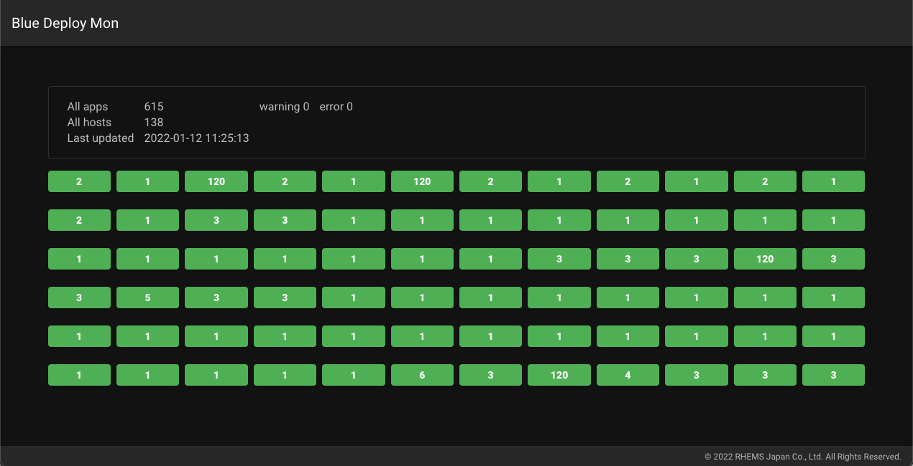

## sample docker-compose
version: "3"
services:
mongodb:
container_name: mongodb
image: mongo:latest
restart: always
ports:
- 27017:27017
command:
- "mongod"
- "--bind_ip_all"
environment:
MONGO_INITDB_DATABASE: blue_deploy
volumes:
- ./initdb.d:/docker-entrypoint-initdb.d
check-mon:
container_name: check-mon
image: rhemsjapan/blue-deploy-mon:api-latest
restart: always
ports:
- 5000:5000
environment:
MOGODB_HOST: mongodb
MOGODB_PORT: 27017
depends_on:
- mongodb
dashboard:
container_name: dashboard
image: rhemsjapan/blue-deploy-mon:admin-latest
restart: always
ports:
- 3000:3000
environment:
API_URL: http://check-mon:5000
depends_on:
- check-mon